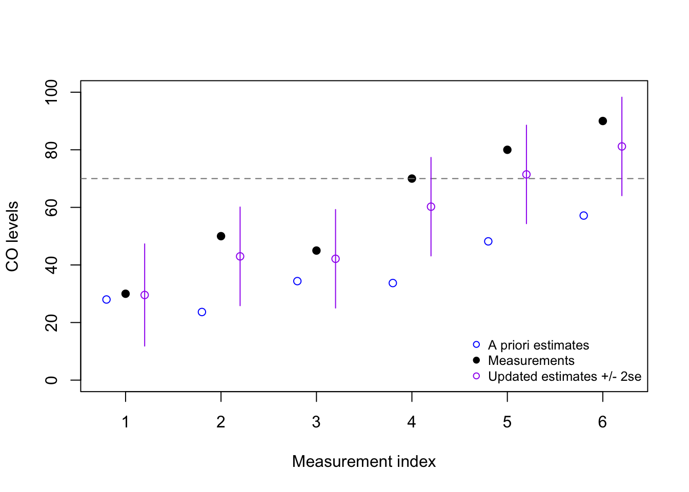

flowchart LR
Start(("Previous<br/>state estimate"))
Predict(("A priori<br/>state prediction<br/>(mean and covariance)"))
Observe(("New observation<br/>(creates innovation residual)"))
Update(("Update state estimate<br/>(mean and covariance)"))
%% Flow
Start -->|System rules| Predict --> Observe -->|Kalman filter| Update -->|Increment time step| Start
The Kalman filter
We have learned what a state space representation looks like, but we have not learned yet how we fit one to a dataset, or uncover estimates of the true state from our imperfect and incomplete observations.
Models with state space representations can be fit in several ways, such as maximum likelihood and least squares. One method though can be shown to be optimal for any state space model, under the very strong assumption that the structure of the model is known, the errors are both white noise, and the covariance matrices (discussed below) are correctly estimated: the Kalman filter.
What it tries to do
The Kalman filter balances two pieces of information against each other: what we thought would happen, and what did happen.
We think the state will evolve from its previous position to a new one, following the system rules. This creates an a priori prediction for the upcoming observation.
Then we see the new observation and it’s not what we predicted (we call this gap the innovation residual).
Perhaps we’ve got everything right and we are simply being misled by measurement error. But if the residual is large, that would be unlikely.
Perhaps a large process noise has drastically changed the hidden state, and we should change our state estimate. But these events should also be rare.
The Kalman filter weights the prior expectation against the new observation and finds a way to split the difference. It will partially adjust the estimate of the state space (allowing our newest observation to suggest that the state is no longer where we expected), but not fully adjust (suggesting that some of the information in our observation was just noise, and should be ignored.)
The key to the Kalman filter is knowing how much to trust our prediction and how much to trust our “eyes” (the new observation). The right balance point for our trust will depend on the reliability of these two inputs. Mathematically, we need to understand the relative sizes of the process noise (the covariance of \(\boldsymbol{\omega}_t\)) and the measurement noise (the covariance of \(\boldsymbol{\nu}_t\)).
How it works mathematically
Let’s review the state space notation from before, and add two new terms:1
\[\begin{aligned} \textrm{State}: \quad \boldsymbol{x}_t &= \mathbf{F} \boldsymbol{x}_{t-1} + \mathbf{B} \boldsymbol{u}_t + \boldsymbol{\omega}_t\\ \\ \textrm{Observation}: \quad \boldsymbol{y}_t &= \mathbf{A} \boldsymbol{x}_t + \boldsymbol{\nu}_t \\ \\ \textrm{State uncertainty}: \quad \mathbf{Q} &= \textrm{Cov}(\boldsymbol{\omega}_t) \\ \\ \textrm{Observation uncertainty}: \quad \mathbf{R} &= \textrm{Cov}(\boldsymbol{\nu}_t) \end{aligned}\]
We should already have estimates of the two new covariance matrices \(\mathbf{Q}\) and \(\mathbf{R}\), since we have assumed that \(\boldsymbol{\omega}_t\) and \(\boldsymbol{\nu}_t\) are multivariate normal error distributions with mean 0.2
From here we are ready to perform the Kalman filter “Texas two-step”:
Predict step (- superscript)
- Predict the next state by evolving the current one. We call this the a priori estimate of the state, because it’s the best guess we have before seeing our new observation. Notice that its input is the previous a posteriori guess of the current state; we never truly know the state. Also notice that the control vector (if we use one) is deterministic and does not need to be estimated.
\[\hat{\boldsymbol{x}}_t^- = \mathbf{F} \hat{\boldsymbol{x}}_{t-1}^+ + \mathbf{B}\boldsymbol{u}_t\]
- Compute the covariance of our a priori prediction, which is the first of the two Kalman filter components (how much we trust the model):
\[\mathbf{P}_t^- = \mathbf{F} \,\mathbf{P}_{t-1}^+ \mathbf{F}^T + \mathbf{Q}\]
Update step (+ superscript)
- Compute the covariance of the innovation residual, which is the second of the two Kalman filter components (how much we trust our eyes):
\[\mathbf{S}_t = \mathbf{A} \,\mathbf{P}_t^- \mathbf{A}^T + \mathbf{R}\]
- Determine the optimal Kalman “gain” (balance point):
\[\mathbf{K}_t = \mathbf{P}_t^- \mathbf{A}^T \,\mathbf{S}^{-1}\]
- Update the estimated state: blend the prediction and the observation using the Kalman gain as the weighting:
\[\hat{\boldsymbol{x}}_t^+ = (\mathbf{I} - \mathbf{K}_t \mathbf{A}) \hat{\boldsymbol{x}}_t^- + \mathbf{K}_t \,\boldsymbol{y}_t\]
- Compute the covariance of the updated estimate, which is an input to the next prediction state:
\[\mathbf{P}_t^+ = (\mathbf{I} - \mathbf{K}_t \mathbf{A}) \, \mathbf{P}_t^-\]
Example: Carbon monoxide detection
Let’s say that we wish to design an alarm which will sound whenever the indoor air concentration of CO (carbon monixide) exceeds 70 parts per million (ppm). Our CO detector is somewhat crude, with a high margin-of-error, and therefore not every measurement above 70 ppm should trigger the alarm.
We measure the CO levels once every ten minutes, and record six measurements:
\[\boldsymbol{y} = 30, 50, 45, 70, 80, 90\] Should we sound the alarm? If so, at which minute? We will need to set some assumptions before answering this question:
Assume that CO disperses under normal conditions, such that we expect each new measurement to be 20% lower than the prior measurement: \(\mathbf{F} = 0.8\)
Assume that the drift in CO measurements between readings is 15 ppm: \(\mathbf{Q} = 15^2 = 225\)
Our state and our measurement are both a single observation with no transformation required: \(\mathbf{A} = 1\)
Assume that the margin-of-error for the detector is 10 ppm: \(\mathbf{R} = 10^2 = 100\)
Since we need to initialize the prediction algorithm we will choose: \(\hat{\boldsymbol{x}}_0^+ = 35\) and \(\mathbf{P}_0^+ = 15^2 = 225\)
Code
y <- c(30, 50, 45, 70, 80, 90)
blanks <- numeric(length(y)) #to be filled later
x_prior <- blanks
P_prior <- blanks
S <- blanks
K <- blanks
x_post <- blanks
P_post <- blanks
x_post0 <- 35 # initial state estimate
P_post0 <- 15^2 # initial state uncertainty
F <- 0.8 # carbon monoxide assumed to disperse over time
A <- 1 # univariate obs, no hidden components to the state
Q <- 15^2 # process variance (CO drift)
R <- 10^2 # measurement variance (sensor error)
for (t in 1:length(y)){
#predict phase
x_prior[t] <- F*ifelse(t==1,x_post0,x_post[t-1])
P_prior[t] <- F^2*ifelse(t==1,P_post0,P_post[t-1]) + Q
#update phase
K[t] <- P_prior[t] / (P_prior[t] + R) # steps 3 and 4 in notes
x_post[t] <- (1 - K[t]) * x_prior[t] + K[t] * y[t]
P_post[t] <- (1 - K[t]) * P_prior[t]}
plot(1:6,y,pch=19,xlim=c(0.75,6.25),ylim=c(0,100),
ylab='CO levels',xlab='Measurement index')
abline(h=70,lty=2,col='grey50')
points(1:6-0.2,x_prior,col='blue')
points(1:6+0.2,x_post,col='purple')
segments(1:6+0.2,y0=x_post-2*sqrt(P_post),
y1=x_post+2*sqrt(P_post),col='purple')
legend(x='bottomright',pch=c(1,19,1),col=c('blue','black','purple'),cex=0.8,bty='n',
legend=c('A priori estimates','Measurements','Updated estimates +/- 2se'))
From this example, we might decide to sound the alarm after the fifth reading (80), since our updated estimate is now above the threshold value of 70 ppm. However, it may be more prudent for us to only sound the alarm when we have considerable confidence that the true CO state is above 70 ppm, in which case we may not even sound the alarm after the sixth reading (90)!
Note that any or all of the matrices \(\mathbf{A}\), \(\mathbf{B}\), \(\mathbf{F}\), \(\mathbf{Q}\), and \(\mathbf{R}\) could vary dynamically from one observation to the next, and so be replaced by the terms \(\mathbf{A}_t\), \(\mathbf{B}_t\), \(\mathbf{F}_t\), \(\mathbf{Q}_t\), and \(\mathbf{R}_t\) — we will skip this added complication for now.↩︎
Serially uncorrelated with past values, but not necessarily diagonal, meaning that the values within the state vector or the observation vector can be correlated with each other.↩︎